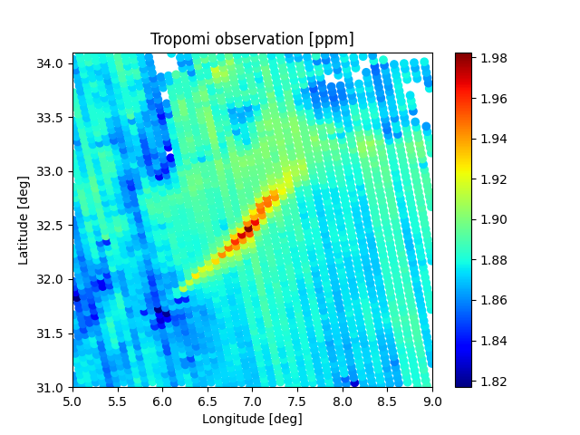

This blog offers informed opinions and perspectives relating to nascent technologies in data-centric engineering. Matthew Jones (Shell) and Philip Jonathan (Shell, Lancaster University) discuss the importance of monitoring methane to reduce global warming, different sensing technologies, and source location methods for unusual methane signals.
Methane (CH₄) is a key greenhouse gas and absorbs thermal radiation more effectively than carbon dioxide (CO₂). Hence, even though it is much less abundant than CO₂ in the atmosphere, CH₄ still traps about half the overall heat trapped by CO₂. The relatively short lifetime of atmospheric CH₄ also means that any reductions in anthropogenic CH₄ emissions will translate into a more immediate reduction in warming. Measuring atmospheric CH₄ to identify and characterise sources of man-made emissions is therefore of obvious interest. This blog summarises the sensing technologies and inference methods used recently for methane monitoring by us and our colleagues; you can click on the hyperlinks for more information.

Sensing technologies
There are many CH₄ sensing technologies appropriate for different types of application, at different spatial and temporal scales. On a global scale, spectrometers such as TROPOMI (on ESA’s Sentinel-5P satellite) provide column integrated concentration measurements for CH₄ at a ground pixel resolution of around 7×7 km² on a daily basis. For continuous monitoring of emissions from a specific location (like a gas processing facility) of the order of 1 km², optical line-of-sight sensing is a possibility. Various types of point sensors are also available; some of these are cheap to deploy, but this tends to come at the expense of accuracy. Manned aircraft and drone-based optical sensing provide flexible alternatives when continuous monitoring is difficult or not desired.
Source location
In principle, we can use satellite-based measurements directly to estimate the spatial distribution of CH₄. Line-of-sight sensing is useful for anomaly detection, to ensure that no unusual CH₄ signals occur. It is sometimes useful to infer the presence of CH₄ by measuring other gases whose concentrations are coupled to those of CH₄. If we have enough knowledge about the wind field, we can use remote measurements to triangulate the location of a source, and estimate its characteristics; this process is commonly called inversion. Wind field data is used within a dispersion model to describe how CH₄ propagates from the source to the measurement location. Such a model can be very simple (like a Gaussian plume) or more complex (such as a numerical solution to the differential equation describing gas advection and diffusion). Source characteristics and associated uncertainties can be calculated using Bayesian inference; because this can be computationally challenging, we require efficient numerical methods or approximations to achieve it. It is usually necessary to estimate the variation of background CH₄ in space and time as part of the inversion.
Sometimes, especially for satellite monitoring, we can even identify the spatial profile of a CH₄ plume emerging from the source, as in the figure; estimating the source location, in this case, is pretty simple! Sometimes, aircraft gather measurements on helical trajectories around a known source location, at increasing altitudes, and then use a mass balance to estimate the amount of CH₄ emerging from the ground area corresponding to the helix. With the development and deployment of improved CH₄ monitoring technology, from more and higher-resolution satellite-based sensors to cheaper, more accurate point sensors, our ability to quantify atmospheric methane is improving all the time.
Competing Interest: Matthew Jones is a Statistician at Shell; Philip Jonathan is Chief Statistician at Shell, and Chair of Environmental Statistics and Data Science at Lancaster University.
Keywords: Monitoring; Remote Sensing; DCE; Sustainability
This is the blog for Data-Centric Engineering, an open-access journal published by Cambridge University Press and supported by the Lloyd’s Register Foundation. You can also find us on LinkedIn and X. Here are instructions for submitting an article to the journal.